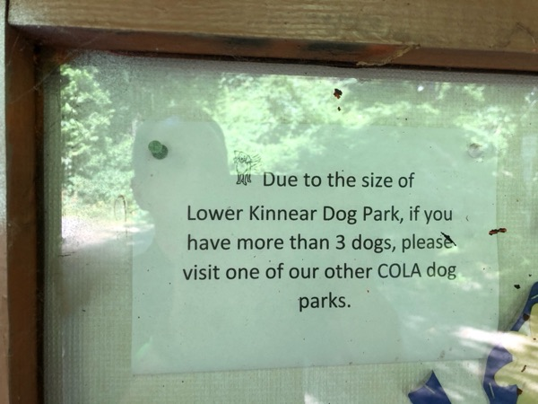
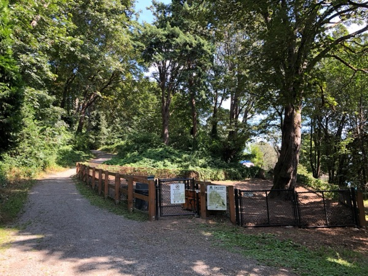
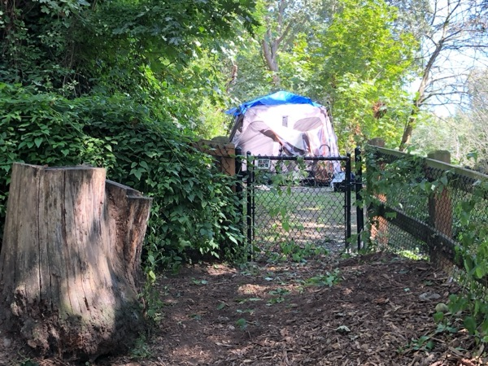

Every Seattle resident's share of parkland
355 sq ft
About the footprint of a small studio apartment
11.7% of Seattleites are within a 10-minute walk of a legal off-leash area (OLA). 76.6% are within SPR's published 2.5-mile OLA standard. This report measures the gap between "a park" and "a park where dogs are legal."
Seattle ranks among the top U.S. cities for park access: 99% of residents live within a 10-minute walk of a park, per TPL's 2025 rankings. Measured the same way, the off-leash system covers 11.7% of residents. This section quantifies that difference across the 14 existing OLAs.
Trust for Public Land's access metric uses a half-mile walkshed — the distance most people will walk before driving. By that measure, 99% of Seattle residents live within a 10-minute walk of a park. Applying the same metric to Seattle's off-leash areas produces a substantially smaller number.
The 10-minute-walk standard — used by TPL, NRPA, the 10-Minute Walk Campaign, and SPR when citing all-park access — yields 11.7% for OLAs. SPR's OLA-specific standard is 2.5 miles, which corresponds to roughly a 50-minute walk one way and covers 76.6% of residents. Applying the same 10-minute standard to both, 86,207 of Seattle's 737,559 residents (2020 Census) have a legal off-leash area within a 10-minute walk.
The map shows Seattle's 14 existing off-leash areas with their half-mile walking-distance areas, the two under construction for fall 2026, and four sites in longer-term planning. These walk areas follow Seattle's pedestrian street network and stop at barriers — I-5, the Ship Canal, steep terrain — that a straight-line circle would cross.
Even after the two fall-2026 OLAs open and all four planned sites are built, coverage remains uneven. The southeast quadrant (Rainier Valley, Beacon Hill south of Jose Rizal, Othello) gains access. Central and north neighborhoods (Ravenna, Wallingford, Green Lake, Phinney, Maple Leaf) remain largely uncovered. The nearest legal OLA for most of Queen Anne and Magnolia is Kinnear (0.124 acres); see the case study below.
Two independent checks point the same way. Enforcement: 73% of off-leash citations (2014–2026) fall outside any OLA's 10-minute walkshed, clustering in Capitol Hill, Queen Anne, Wallingford, Maple Leaf, and Ravenna — the full citation-vs-access analysis now lives on the Enforcement page. Equity: cross-tabbed against Trust for Public Land's park-priority index, OLA coverage is highest in the top-priority tier (44%) and lowest in the middle tier (15%), where most of those citation hotspots sit. (Method and sources in Data notes.)
Findings 01–02 measure geographic access. This one asks a different question: is OLA acreage inside each ZIP proportional to the dogs registered there? Joining the 26,652 active dog licenses (Seattle Open Data, April 2026) to OLA acreage by ZIP, the answer is no — nearly every Seattle ZIP sits below its fair share. (Method in Data notes.)
The two largest deficits are South Lake Union / Uptown (98109) and Queen Anne (98119): each has roughly 850 licensed dogs and a single OLA of about one-tenth of an acre. The next three (U District / Laurelhurst, Madison Park / Montlake, Capitol Hill / Central District) have zero OLA acreage inside the ZIP. Four ZIPs sit above fair share — Westcrest (+7.3 ac), Magnuson (+5.7 ac), Dr. Jose Rizal + Blue Dog Pond (+4.3 ac), Genesee (+0.8 ac). Nearly every other Seattle ZIP is below fair share.
New — the licensing records back this up. The 2014–2025 license history (PRR C264029) shows the same dog-dense neighborhoods over the full decade — NE Seattle, Wallingford, Ballard, and the Queen Anne / Magnolia core all rank among the highest for licensed dogs, and all remain short on walkable off-leash acreage. It also shows the licensed base is a small, shrinking slice of all dogs (~7–18% citywide; see Part I), so the deficits here are a floor: the true demand is larger than the licensed counts that drew this map.
Drawn geographically: darker navy = more licensed dogs in that ZIP; orange polygons are the union of OLA walksheds. The gaps — high-density navy without orange — are the under-served areas.
Two adjacent-but-distinct neighborhoods carry the city's highest dogs-per-OLA-acre ratios.
827 licensed dogs. Denny Park's OLA: 0.105 acres — 4,574 sq ft, roughly one basketball court for the neighborhood.
870 licensed dogs. Kinnear OLA: 0.124 acres — 5,401 sq ft, about one basketball court for the neighborhood.
On neighborhood labels and ZIPs. ZIP codes are the finest geography the Pet Licenses dataset provides, but they don't map cleanly to named neighborhoods. Most Seattle ZIPs span two to five recognizable neighborhoods (98103: Fremont, Wallingford, Green Lake, Phinney Ridge, south Greenwood; 98122: Capitol Hill + Central District). Labels here lead with a primary neighborhood name and cite the ZIP for precision. A few ZIPs (98133, 98155, 98177, 98178, 98146, 98168) extend past Seattle's city line; those are excluded from the deficit chart because OLA acreage is Seattle-only. Licensed-dog counts are floors — compliance estimates put the actual dog population several times higher.
"14 OLAs" is the headline count. Of those 14, half are under one acre and three are under a quarter-acre. The three largest — Magnuson, Westcrest, Dr. Jose Rizal — hold roughly three-quarters of Seattle's total OLA acreage.
The median Seattle OLA is under one acre. The two smallest (Denny at 0.105 ac and Kinnear at 0.124 ac) are roughly the footprint of a basketball court each. Portland's smallest fenced OLA is larger than Seattle's third-smallest.
The top four OLAs (Magnuson, Westcrest, Dr. Jose Rizal, Genesee) hold ~79% of Seattle's ~31 total OLA acres. The bottom seven (Lower Woodland, I-5 Colonnade, Magnolia Manor, Regrade, Plymouth Pillars, Kinnear, Denny) collectively hold under 10%.
Divide Seattle's total parkland by its human population, and divide the OLA footprint by the dog population. The resulting footprints, drawn at the same scale:
A Seattle resident has roughly 66× more parkland per person than a Seattle dog has dedicated off-leash space per dog. At the conservative 150,000-dog floor (Seattle Humane's lower estimate), the ratio is 40×.
Amenity inventory for Seattle's 14 OLAs. Citizens for Off-Leash Areas (COLA) surveyed OLA users and published the amenity breakdown; numbers are cross-checked against current SPR OLA pages (April 2026).
Approximately 79% of Seattle's total OLA acreage is concentrated in four parks (Magnuson, Westcrest, Dr. Jose Rizal, Genesee). SPR's own survey work identifies the top reason non-OLA users give for avoiding OLAs as location inconvenience. The four most-frequented OLAs in SPR's tracking are Magnuson, Westcrest, Golden Gardens, and Woodland. The Kinnear case study below details one site's usage profile.
Three independent authorities publish overlapping standards for the size of a functioning neighborhood dog park and the per-dog capacity a park of a given size can support.
Applied to Seattle's 14 OLAs: seven of 14 are below the AKC 1-acre floor, and three are below a quarter-acre. At the 100 sq ft per-dog planning density, Kinnear (~5,400 sq ft) implies a peak of about 54 dogs and Denny (~4,600 sq ft) about 46 — the two smallest in the system.
Kinnear's implied peak capacity is 54 dogs at the 100 sq ft standard and 72 dogs at the 75 sq ft floor. SPR signage at the park asks owners with more than 3 dogs to use another OLA. Kinnear is the only designated OLA within a 10-minute walk of most of Queen Anne.

Park signage asking 3+-dog owners to use another OLA.
Park entrance, July 2019 — encampment tarp visible (intermittent).
Tent against the OLA's back fence (July 2019); intermittent.Comparing total OLA acreage across cities is harder than comparing counts because cities define "off-leash" differently. Portland has 38 DOLAs (TPL 2025) but most are unfenced voice-control areas. San Francisco counts 42 dog-friendly sites including small Dog Play Areas (DPAs) inside larger parks. Vancouver BC counts 36 including time-restricted areas. Seattle counts only fully-fenced dedicated OLAs.
A best-effort comparison of OLA acreage per capita, with caveats inline:
| City | OLA count (methodology) | Est. total OLA acres | OLA acres per 10,000 residents | Largest single OLA | Median OLA size |
|---|---|---|---|---|---|
| Seattle, WA | 14 (all fenced) | ~31 | 0.38 | 9.0 (Magnuson) | 0.9 |
| Portland, OR | 38 (most unfenced) | ~85 | 1.29 | ~5 (Gabriel; fenced) | 1.3 |
| San Francisco, CA | 42 (mix fenced/unfenced) | ~120 | 1.38 | 14 (Fort Funston, GGNRA)‡ | 1.5 |
| Vancouver, BC | 36 (mostly time-restricted) | ~168 | 2.54 | 40 (New Brighton) | 2.3 |
| Austin, TX | 13 (mix) | ~680* | 6.63* | 293 (Walnut Creek Metro Park, voice-control natural area)* | 2.0 |
* Austin's "largest" entry (Walnut Creek Metropolitan Park, 293 ac voice-control natural area) is not a traditional fenced dog park; the unadjusted Austin total of ~680 ac (sometimes cited externally) reduces to ~80 ac on a fenced-comparable basis (the figure used here). Portland's ~85-ac total comes from PP&R's published DOLA inventory and includes unfenced voice-control sites; Portland's largest single fully-fenced site is Gabriel Park's ~5-ac DOLA, well below the totals shown for SF, Vancouver BC, or Austin's largest.
‡ Fort Funston is GGNRA federal land, not SF Rec & Parks property; off-leash access there has been contested under the GGNRA Dog Management Plan. Listed here as the largest off-leash area SF dogs commonly use; SF's largest city-managed dog play area is closer to 4 ac. The per-capita counts still substantially exceed Seattle. Vancouver BC's 168-acre total (from its 2017 People, Parks & Dogs Strategy) reflects time-restricted shared-use areas on beaches and fields.
On per-capita OLA acreage, counting only fully-fenced sites in Seattle against each peer city's own definition, Seattle sits at the bottom of this five-city comparison. Vancouver BC has ~6.7× Seattle's per-capita acreage; San Francisco and Portland, ~3.4× and ~3.4×.
Two public datasets bear on the scale of illegal off-leash use: SPR's 2016 owner survey (self-reported) and Find-It-Fix-It “Nuisance Dogs in a Park” complaints. The complaint records have now arrived (PRR C263990): residents filed about 3,010 in 2025, the first full year of the record — roughly 11 for every off-leash citation the city issued that year. The earlier “~1,100 in 2024” was a partial-year secondary citation. Full complaint analysis (including the complaint-vs-citation comparison) is on the Enforcement page; the off-leash ticket records also arrived (PRR C263949) and are analyzed there. This section collects the survey and complaint numbers.
In 2016, as part of the research that became the People, Dogs and Parks Strategic Plan, SPR surveyed Seattle dog owners about compliance with leash laws. The results have not been prominent in SPR communications.
“Park rangers routinely encounter dogs off-leash in parks and on trails. These encounters have a direct impact on park users who feel unsafe, and on native wildlife in Seattle's natural areas.”
Two of five dog owners in the 2016 survey reported illegal off-leashing in parks on a monthly-or-more basis — a self-reported figure, to a survey run by the enforcing agency. SPR's 2023 OLA Expansion Study frames expansion as a goal “to advance [the] goal of creating OLAs that are increasingly within walking distance of residents and allow SPR to fill in geographic gaps where neighborhoods lack access to an OLA.”
Find-It-Fix-It “Nuisance Dogs in a Park” complaints now run about 3,000 a year (3,010 in 2025, the first full year of the record) — far more than the city issues citations. Because the complaint category was only created in 2024, there is no longer-run trend to read into; the Enforcement page sets the complaint volume against citation output over the overlapping months.
About nine in ten Seattle residents are outside a 10-minute walk of an OLA (only 11.7% are within one). A 25-minute drive with a 70-pound dog is a higher friction cost than walking to the local park.
A 0.1-acre OLA (Kinnear, Denny) or 0.2-acre OLA (Regrade, Plymouth Pillars) has limited running room. Owners with high-energy dogs often choose a larger unauthorized space over a smaller authorized one.
Several OLAs — among them Kinnear and Plymouth Pillars — sit adjacent to or are accessed through areas with chronic encampment and safety issues. The Kinnear case study below documents one 20-year record.
Enforcement data (see the Enforcement page) shows citations concentrated in neighborhoods without a nearby OLA, not distributed evenly across the city. The pattern is consistent with a supply-driven explanation.
Kinnear's OLA is at the far side of Lower Kinnear Park from the parking lot and main entrance. The park it sits in has been the site of documented homeless-encampment activity and clearance cycles for over 20 years. Contemporaneous reporting and city records are summarized below.
Implications for access counts. Kinnear is counted as Queen Anne's OLA in SPR's gap analysis. Observed usage patterns indicate that many Queen Anne dog owners drive to Magnuson or Magnolia Manor, or use Kerry Park, Rodgers Park, Queen Anne Bowl, or nearby school playfields (where off-leash use is not authorized). Plymouth Pillars (Capitol Hill), Denny Park (SLU), and Regrade (Belltown) sit in or adjacent to similar site-safety patterns. The nominal OLA count of 14 assumes all 14 are practically functional for their neighborhoods.
The Part I, Part II, and Part III findings stack into a consistent profile:
10-minute walkshed methodology. TPL defines the 10-minute walk as a half-mile service area along the public road network, cut by physical barriers (highways, tracks, rivers without bridges). TPL publishes the “99% of Seattle residents” figure using this methodology for all parks; TPL does not publish a dog-park-specific version. The OLA walkshed figures on this page (11.7% at 10-min, 76.6% at 2.5-mi) are computed in-repo: scripts/compute_walkshed.py runs osmnx against Seattle's OSM walk network (projected to UTM 10N; physical barriers respected) to compute per-OLA isochrones; scripts/population_coverage.py intersects the union with 2020 Census block-group population clipped to the Seattle city boundary. Each walk-area boundary is drawn as an alpha-shape (α=0.003) — a shape that hugs the reachable street network's actual concavities rather than bridging across them the way a simpler convex outline would — of reachable network nodes, with a 0.3 km² area floor and a convex-hull fallback for OLAs at the edge of OpenStreetMap (OSM) coverage (Westcrest is one). Output at data/walkshed/population_coverage.csv; full methodology in METHODOLOGY.md.
Peer-city OLA counts. The methodological differences are real and material. Portland's 38 DOLAs (TPL 2025) include 20+ unfenced voice-control areas; Seattle counts zero unfenced sites. Redefining Seattle's approach to include unfenced designated sites (as several other cities do) would raise its count, though SPR has publicly stated a preference for fenced sites on liability and environmental-impact grounds. The comparison in this report uses each city's TPL ParkScore count.
OLA acreage. Per-OLA acreage is pulled from SPR's Dog Off-Leash Areas ArcGIS FeatureServer (April 2026) and cross-checked against SPR individual OLA pages — see data/seattle-olas.csv. Peer-city totals are rougher (±20% reasonable) because no peer city publishes a single authoritative inventory in the way Seattle does.
Kinnear Park timeline. Drawn from contemporaneous reporting: Seattle Weekly (2007), Seattle Times (2008), Aussiedoodle Adventures (2020), Fix Homelessness (2023), KOMO News (2025). The 2008 Dewey Potter quote is verbatim from the Seattle Times piece.
“Dogs per OLA” calculation. Using the widely-cited 150,000 dog-population floor divided by 14 OLAs gives ~10,700 dogs per OLA; SPR's 2023 Expansion Study cites higher estimates (up to 400,000), which would raise the ratio to ~28,500.
TPL 2025 ParkScore Seattle PDF · TPL ParkServe methodology documentation · Seattle Parks & Recreation individual OLA pages · SPR Off-Leash Area Expansion Study recommendations (Parkways blog, Feb 2024) · SPR People, Dogs and Parks Strategic Plan (2017) · KOMO News on Kinnear (April & May 2025) · Seattle Weekly “Ruff Trade” (2007) · Seattle Times Queen Anne encampment clearing coverage (2008) · Queen Anne & Magnolia News OLA expansion coverage (Nov 2023) · Portland Parks & Recreation DOLA list · Sniffspot and BringFido (cross-referenced)
On framing. SPR foregrounds the city's overall park access, which is genuinely strong, and OLA investment has recently increased. TPL appropriately weights total park access more heavily than any single amenity. This report presents the specific slice of data that describes the off-leash system, computed on the same standards TPL and SPR use elsewhere. Related opinions and policy recommendations are kept on a separate opinion page.
{kind=link}
{kind=link}
{kind=link}